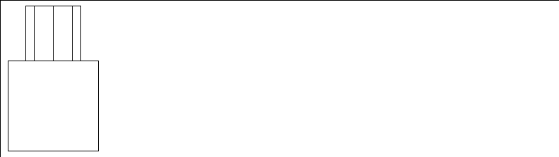

Working with Bodies
[N-World Contents] [Book Contents] [Prev] [Next] [Index]
Working with Bodies (cont.)
Replace with Bezier
Wire segments
Lets you replace segments of wires with Bezier curves. Bezier curves are cubic curves that pass between two endpoints and approximate the locations of two interior nodes called control points. When you click on Replace with Bezier, N-Geometry adds two control points to the segment. You can then move the control points and the segment will curve to follow the new control point location, leaving the segment's endpoints in their original position. Once you replace a segment with a Bezier curve, you can replace the curve with a segment again by using Replace with Segment.
To convert a segment:
1. Create a wire.
2. (SHIFT-L) on the middle segment.
3. (CLICK-L) on Replace with Bezier.
Figure 4.105 Multi-segment wire
4. (SHIFT-L) on the lower control point.
- When you first convert the segment to a Bezier segment, the control points are right along the wire.
5. (CLICK-L) on Move.
- As you move the control point back and forth, the position of the control points are shown with a set of thin, orange lines.

Figure 4.106 Multi-segment wire; the middle segment has been converted into a Bezier segment, and the lower control point moved down to bend the curve
Replace with Bspline
Wire segments
Replace arc and Bezier curves with segments. To use this feature, simply select the arc or curve and then (CLICK-L) on Replace with Bspline in the Modify Element menu.
Replace with Wire
End wire segments
Replace with Wire replaces the selected segment with another wire (effectively joining the two into one wire).
In the example below:
1. (SHIFT-L) on the bottom segment of the top wire.
2. (CLICK-L) on Replace with Wire.
3. Choose the bottom wire from the list of objects.
Figure 4.107 Left, two separate wires; right, the resulting joined wire
Reverse
Wires
Reverse the direction of a wire. Reversing a wire changes the direction of each segment so that the starting point becomes the ending point, and vice versa.
- Note. The Reverse command is particularly useful for changing the direction of a trajectory that you want to animate an object along in N-Dynamics.
- Note. Reverse doesn't change the shape of the wire or reorder it's segments; it only reverses the designated "beginning" and "end."
Rotate
Edges, faces, polyhedra, vertices
Rotates the element around global axes passing through a selected center.
Figure 4.108 Left, original cube; right, copy rotated around its own Y-axis
Figure 4.109 Left, original cube; right, copy with selected face rotated around global-Z axis
Rotate Normal
Vertices of a polyhedron
Interactively adjusts the orientation of the normal for a selected vertex. This lets you adjust the apparent position of any light striking an object, since lighting is based on the relationship between a vertex's normal and the angle at which light strikes the area around that vertex.
While you can rotate the normal of an object displayed in wire frame mode, the effect is much more visible if you turn on Shading for the object.
This feature can be used, for example, to tweak the appearance of a pre-lit object being sent to a 3D game system.
To rotate a vertex's normal:
1. Assign a material to the object.
2. (CLICK-L) on points on the element sensitivity menu.
3. (SHIFT-L) on the vertext whose normal you want to move.
- You might, for example, want to tone down how directly the light appears to be striking the front of an object.
4. (CLICK-L) on Rotate Normal and move the mouse.

Figure 4.110 Left, original dodecahedron; right, after rotating the normal of the vertex shown
- Note. To revert the normal to its original orientation, (SHIFT-L) on the vertex, then (CLICK-M) on Rotate Normal.
Saturation
Ambient, point, infinite, and spot lights
Interactively adjusts the saturation (purity) of a light's color. For example, pure blue has a high saturation. As saturation decreases, pure blue becomes a pastel blue before turning to a gray.
To adjust the saturation of a light interactively:
1. (CLICK-L) on points on the element sensitivity menu.
2. (SHIFT-L) on the light, then (CLICK-L) on Saturation.
- Move the mouse left and right to adjust the saturation of the light.
As you move the mouse, both the body and its emitted light update interactively. Note that as the light becomes less saturated, it turns to gray.
For more information on lights, see the sections "Hue," on page 4-41, and "Brightness," on page 4-9.
- Note. You can also adjust the saturation of the light using the Attributes Editor, or use (CTRL-L) on Saturation to set the light value numerically.
Scale
Edges, faces, polyhedra, vertices
Scales an element relative to its geometric center or relative to any arbitrary vertex.
Figure 4.111 Original object and scaled copy
Select Edge Loop
Edges, edge collections
Collect edges and edge collections that are lined up in a single path (e.g., across a grid) or in a loop (e.g., around a solid of rotation). The collection stops when it encounters a vertex with three edges (such as the edge of a grid) or with five or more edges (such as a vertex that branches into a "Y").
This item is useful for selecting all the elements around an object that might otherwise be difficult to collect.
Figure 4.112 Selecting an edge loop
You can then manipulate the selected elements just as if you had collected them manually; additionally, once you have a collection of segments, you may want to use Select Elements to collect the points before performing another operation:
Figure 4.113 Left, collected elements; right, selected elements modified with Scale
Select Elements
All element types
Select all neighboring or otherwise related elements of a single type.
Select Face
Edges
Note that because this operation selects faces based on their "rightness" or "leftness" that it may be helpful to turn on Highlight Head for Segment Highlighting in the Utilities>Preferences menu.
Select Shared Edges
A collection of faces
Selects those edges which are shared by two or more contiguous faces in a collection.
Set Direction
Infinite lights
Set the light direction (where it's pointing) using numeric xyz coordinates.
- Note. This command appears under the Other Geometric operations portion of the modify operations menu.
Set Light View
Spotlights
Interactively positions the light as if the light itself were the camera's viewpoint. The light moves just like the camera.
1. With Points sensitive in the Elements sensitivity menu, select the light.
- The camera view is set to the light's; it is aimed toward the light's aimpoint.
2. Move the mouse until the portion of the scene you want to illuminate with the light is in the N-Geometry window.
- Use the camera moves just as if you were moving the camera.
3. (CLICK-L) to save the light's new position.
- The camera returns to its previous position, but the position of the light has been updated.
- Note. The aspect ratio for the camera changes to match the aspect ratio of a spotlight with a rectangular spot pattern.
- Note. To abort a light view change, (CLICK-R) after the move has been initiated.
Set Weight
Bspline curve control points
Gives more or less "pull" to a control point. For an arc along a wire, select the segment and convert it to a bspline using the Replace with Bspline command. Then select a point at either end of the wire and move the mouse back and forth to change the shape of the arc.
Figure 4.114 Top, original Bspline curve; bottom, after modifying the "weight" of a control point.
Smooth
Face collections, polyhedra, wires
Gives polyhedra and face collections a smoother, rounder appearance by beveling all edges and vertices. Additional faces are added to smooth the body:
Figure 4.115 Left, original cat; right, smoothed cat
You can smooth a collection of faces if you want to add detail only to a particular area of a body. For example, suppose you wanted to add some detail just to the head area of the cat model shown above:
1. Collect the faces around the cat's head.
2. (CLICK-L) on Smooth.
- Only the area made up of the collected faces is smoothed:
Figure 4.116 Left, original cat; right, cat with head region smoothed
To smooth a body using a menu (to specify how many times the Smooth command should be applied), (CTRL-L) on smooth. The menu in Figure 4.117 is displayed:
Figure 4.117 The menu for adjusting smoothing parameters
Figure 4.118 Left, original pyramid; center, pyramid smoothed once; right, smoothed three times
Smoothing with History
The "Smooth with History" technique described here creates a copy of an object; the copy is smoothed a specified number of times, and can be controlled using the lower-resolution original as a "control" object.
Try the following:
1. Create a cube.
2. (SHIFT-L) on the cube.
3. (CTRL-L) on Smooth.
- Enter 3 for number of iterations and Yes for Copy w/History?
- You now have two copies of the original object, one smoothed once, another smoothed three times.
Figure 4.119 Original cube with copy smoothed three times
4. Choose Points on the Element sensitivity menu.
5. Move a point on the original object.
Figure 4.120 Modified control object
6. Choose Bodies on the Element sensitivity menu.
7. (SHIFT-L) on the smoothed copy.
8. (CLICK-M) on Smooth.
- This resmoothes the copy based on the state of the original control object:
Figure 4.121 Move a point on the original control object
When used in conjunction with N-Dynamics, this means that you can create a test animation using the lower resolution object (which will animate quickly), then substitute the higher resolution object when you do you final animation.
You may also find it useful to toggle the visibility or sensitivity of the hi-res version of the object (either (SHIFT-L) on the object or use the Object Display>Visibility command). See the sections "Visibility," on page 6-8 and "Sensitivity," on page 6-7.
Sphericize
Bodies, faces, collections of points
Moves the selected set of vertices equidistantly from a specified point, making the element rounder.
After selecting the object, you specify a midpoint around which the object is to be "sphericized" from the displayed menu.
You are then automatically put in points mode and must select a control point somewhere on the object that will locate the outer radius of a circle that defines the "sphere:"
Figure 4.122 Left, original man; right, sphericized version using object midpoint as center and a point on top of the head to define the sphere's radius
- Note. Selecting a control point closer to the center also has a scaling effect on the object (since it defines a smaller radius). If you want the shape to retain its size, choose a control point close to the perimeter of the object.
Sphericize can also be used to make a face more circular; the effectiveness of this command depends on how many sides the selected face has. Increasing the number of edges on a face provides better (more spherical) results:
Figure 4.123 Left, original face, middle, sphericized face (8 edges), right, sphericized face (16 edges)
Spot Angle
Spot lights
Interactively adjusts the spot angle for the selected spotlight:
Figure 4.124 Left, original light; right, same light with enlarged spot angle
Taper
Polyhedra, wires, wire node collections, vertex collections
Progressively scales the distance between collected elements along an axis.
Figure 4.125 Cat tapered along the Y axis
Figure 4.126 Specifying taper parameters
Tighten
Vertices, bodies, and wires
Pulls extruded parts of an object closer to the surrounding "surface" of the model. This could be used, for example, to tighten a group of mountains that had been pulled up from a grid.
For each selected point, the midpoint of all adjoining faces is calculated; the tighten operation moves the point toward or away from that midpoint.
Figure 4.127 Tighten parameters
Figure 4.128 Left, original object; right, with individual vertices loosened or tightened
The Tighten operation can be applied to an entire group of vertices, such as the peaks of a range of mountains:
Figure 4.129 Left, original object; right, with peaks selected and tightened twice
- Note. Tightening an entire grid (like that in Figure 4.129) rather than points on the grid can cause the entire object to shrink (since all selected points are tightened. Tighten is best used with an explicitly selected set of vertices.
Triangulate
Faces, bodies
Divides a face, collection of faces, or all faces on a selected body into triangular faces for export to selected game consoles.
Figure 4.130 Left, original object; right, with faces subdivided into triangles.
Twist
Polyhedra, wires, wire node collections, vertex collections
Progressively rotates an element along an axis.
Figure 4.131 Select Twist Parameters menu
Figure 4.132 Left, original object; middle, twisted object; right, swirled object
Undo
Any element
Undoes the last operation. You can use Undo repeatedly, undoing each operation that was performed on the object in reverse order, until it eventually returns to its original state. When the object cannot be undone any further, a message is displayed, telling you that the object is in its most primitive state and can only be killed off to be reduced any more.
To undo an operation:
1. (SHIFT-L) on any element that was affected by the last operation.
- For example, if you extruded a face, you could choose one of the extruded points, faces, or the body itself.
2. (CLICK-L) on Undo.
- The object returns to its state before the last operation.
Vertex Subdivide
Faces, polyhedra
Cut one face (or faces) of a polyhedron into triangular faces. (See Figure 4.133.)
Figure 4.133 Left, face subdivided between existing vertices; right, face subdivided from a specified vertex
Weld
Polyhedra
Merges two polyhedra having nearly coincident faces of the same size and shape. Nearly coincident means the planes of the two faces are closer than a certain distance and angled within approximately .1 degree of each other.
The default distance by which the two faces can be separated is .0001 units, but you can (CTRL-L) on Weld to specify another value. (If you do (CTRL-L), however, note that N-Geometry does not display the menu for specifying tolerance until after you select the second polyhedron.)
To weld two objects:
1. First make sure the two have at least one set of nearly coincident faces.
- Let's assume we want to weld the cylinder to the cube:
Figure 4.134 Objects to be welded
- For the explanation below, let's also assume that both of these objects are aligned along the global Y axis.
2. (SHIFT-L) on the cylinder.
3. Press the "o" hot key to enter orthographic mode.
4. Press the "z" hot key so that you are looking directly at the side of the object.
5. (CLICK-L) on Axis Move.
- Move the cylinder so that it's bottom is aligned with the top of the cube:

Figure 4.135 Objects aligned for weld
6. (SHIFT-L) to choose the top face of the cube.
7. (CLICK-M) on Inset and choose the bottom face of the cylinder.
- This creates a hole of the same shape as the bottom of the cylinder on the face being welded to. If you turn off the Visibility of the cylinder, the cube should look like this:

Figure 4.136 Preparing a face for weld
8. (SHIFT-L) on the top face of the cube and (CLICK-L) on Dehole.
- The face should look something like this after being deholed:
Figure 4.137 Deholing a face before the weld
9. Make the cylinder visible again.
10. (SHIFT-L) on the cube.
11. (CLICK-L) on Weld.
12. (CLICK-L) on the cylinder.
13. A copy of the cylinder is now welded to the cube, and can now be modified as one object.
- Weld does this as a safety feature: it does not modify the second polyhedron, but rather a copy of it, retaining the original version in case you ever need it.
Figure 4.138 Left, original cylinder; right, cube, with copy of cylinder welded on
If the second polyhedron does not contain a coincident face, N-Geometry tells you so by displaying a message in the shell window.
[N-World Contents] [Book Contents] [Prev] [Next] [Index]
 Another fine product from Nichimen documentation!
Another fine product from Nichimen documentation!
Copyright © 1996, Nichimen Graphics Corporation. All rights
reserved.